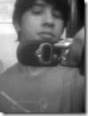
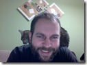

|
|
Alexandre Porcelli 30 anos – Programador, Programador, Programador, Programador, Filho Mediado e Péssimo Marido. Programa profissionalmente desde os 14 anos. Já programou em Cobol, Natural, Easytrieve, JCL, Clipper, Basic, VB3, 4, 5 e parou no 6. Desde 2002 programa em Java e assim ficou… pelo menos até agora. Só trabalha com tecnologias open source, apesar de não usar nenhuma camiseta do Che Guevara e jurar que é capitalista. Organizou em 2010 o primeiro encontro de noSQL no Brasil e desde então… tem falado muito sobre o tema. Escreve regularmente na JavaMagazine, e nas horas vagas programa para relaxar. |
| |
Elemar Rodrigues Severo Junior Programador, pai, enxadrista e apaixonado por vinhos. Conheceu o universo da computação bem cedo, por volta dos 9 anos. [Pensa que] Aprendeu BASIC, Pascal, C e Assembly na adolescência. Apaixonado por MSX, escrevia várias vezes um mesmo programa por não ter grana para comprar um gravador de fita-cassete. Vendeu a alma ao diabo e se rendeu a linguagens como Clipper, COBOL e Visual Basic para poder pagar as contas. Sendo um cara de sorte, conseguiu arrumar quem o pagasse para escrever programas maneiros utilizando tecnologia de ponta. Aos 20 anos, passou a desenvolver softwares para projeto de ambientes 3D. Mais velho, e supostamente mais maduro, passou a trabalhar com outras tecnologias. Conheceu a internet, banco de dados, computação distribuída (e paralela). Hoje, trabalha com P&D na Procad. Também é pai de um filho de 10 anos, enxadrista mediano, apreciador de bons vinhos e de boas discussões. É um nerd! [e tentou parecer martin fowler na foto ao lado] |
 |
Fábio Akita Fabio Akita é um conhecido blogueiro e evangelista da comunidade Ruby on Rails e Agile. Atualmente é Gerente de Projetos pela Gonow Tecnologia. Foi Gerente de Projetos na Locaweb, onde também fez parceria na concepção da conferência anual Rails Summit (rebatizada de "RubyConf Brasil"). Já trabalhou como Brazil Rails Practice Manager para a consultoria americana Surgeworks LLC. Por mais de 5 anos foi consultor de integração e desenvolvimento no mundo SAP. Tem mais de 15 anos de experiência nas áreas de desenvolvimento de software e gestão de projetos, dá palestras em faculdades e conferências de tecnologia e gestão. |
|  |
Felipe Oliveira Aikidoísta, DJ e produtor e apaixonado por cinema, programo desde os 11 anos de idade e me esforço muito para não virar "nerdão", mas tá complicado ! Hoje com 31 anos, acredito que consegui maturidade em design de software as custas de muita literatura, ralação e principalmente, abrir minha cabeça para outras linguagens, plaformas, culturas e estilos de desenvolvimento. Fundei recentemente a SOA|EXPERT, empresa especializada em repassar todo o conhecimento que absorvi em projetos e produtos SOA, mas continuo estudando diversos assuntos como: Event Model, Actors Model, Grid, MapReduce – Hadoop, NoSQL, CEP e assuntos mais Hardcore: VMs, HEC I/O, Dynamic Patching, Funções Matemáticas e etc. Como gosto realmente de estudar, então consegui uma forma de reumunerar, levando conhecimento às pessoas e isso me dá muito prazer !! Bom, pretendo fazer uma boa explanação sobre Arquitetura SOA, diferente de tudo que leram por aí e tentar despertar o bit para esse jeito bacana de fazer software. |
| |
Giovanni Bassi Arquiteto e desenvolvedor, agilista, pai, filho, namorado, escalador, provocador. Programa porque gosta, e começou a trabalhar com isso porque acha que trabalhar como administrador é meio chato. Por esse motivo sempre diz que nunca mais vai virar gerente de ninguém. E também porque acredita que pessoas autogerenciadas funcionam melhor e por acreditar que heterarquia é melhor que hierarquia. Mas isso é outro assunto. Foi reconhecido Microsoft MVP depois que alguém notou que ele não dormia a noite pra ficar escrevendo artigos, cuidando e participando do .Net Architects, gravando o podcast Tecnoretórica, escrevendo posts no blog e falando o que bem entende no twitter @giovannibassi. E por falar nisso é no twitter que conta pra todos que gerencia de projetos deve ser feita pelo time e não por um gerentes, que greves em TI são coisas sem sentido e que stored procedure com regras de negócio são malígnas. Você já deve ter percebido (até porque está lá na primeira frase) que Giovanni é agilista. De tanto gostar disso ele trouxe os programas de certificação e treinamento PSD e PSM da Scrum.org pro Brasil, e por causa deles, do MVP e de algum trabalho que aparece tem que ficar indo pros EUA de vez enquando, coisa que prefere não fazer. (É bem comum você ouvir ele perguntando porque a Scrum.org e a Microsoft não estão na Itália, por exemplo.) Junto com alguns Jedis criou a Lambda3, que, apesar de ser pequena e de não ser muito comum no Brasil, insiste em fazer projetos e consultoria direito. Por causa da Lambda3 ele tem trabalhado mais do que quando era consultor independente, mas menos do que a maioria das pessoas. Quer dizer, isso se você considerar que os trabalhos junto à comunidade não são trabalho, caso contrário ele trabalha mais que a maioria das pessoas. Recentemente ele resolveu que merecia viver melhor e ganhar uns anos de vida e desistiu de ser sedentário, fazendo algum barulho de vez em quando com os amigos no twitter com a hashtag #DotNetEmForma. Por causa do convite recente de amigos do lado Open Source (que ele respeita e admira), começou a escalar, e agora está sempre com as mãos machucadas. Mas ainda dá pra programar. Você encontra ele sempre em algum evento, como o TechEd, e o DNAD, mas também outros menos comuns para o pessoal do .NET, como a RubyConf. Nesses eventos, ou ele está vendo palestras, ou batendo papo com alguém, ou codando alguma aplicação que alguém achou que dava pra fazer durante o evento.
|
|  |
Gleicon Morais Programo desde 11 anos de idade, tenho 35, trabalho com sistemas distribuídos há pelo menos 16, desde que tive contato com a internet. Hoje programo em Python, Erlang, um pouco em Ruby e um menos ainda em JS. Depois de algum tempo descobri que trabalhei com o que hoje é classificado como NoSQL – e nos ultimos 2 anos tenho me dedicado a colecionar desculpas para utilizar estas tecnologias. |
| |
Leandro Daniel Músico amador, casado, pai e desenvolvedor de software. Por não ter o talento suficiente e nem sorte como músico, tentou a área de TI por influência do pai (talvez o maior usuário final entusiasta de tecnologia que já tenha conhecido). Se envolveu com desenvolvimento de software em 1998 e se apaixonou pela área de TI. Recém-formado, saiu de Minas Geras e veio tentar a vida em São Paulo, onde mora desde 2002. Além de receber por e-mail, quase que semanalmente, uma piada sobre mineiros, teve a oportunidade de trabalhar em projetos desafiadores. Trabalha há 8 anos na Emphasys, empresa que lhe deu abertura para fazer (experimentar/aprender) tudo que desejou no desenvolvimento de software. Atualmente, faz parte da Célula de Inovação, em conjunto com diretores da empresa. No início de 2009 realizou uma vontade antiga e começou a escrever artigos para a revista .net Magazine, onde procura contribuir com experiências vividas em projetos e boas práticas de desenvolvimento de software. Em 2010 se tornou Editor Técnico da mesma revista e passou a escrever também para a Easy .net Magazine. Recentemente, começou a mexer com cinema de animação, fazendo alguns filminhos de stop motion. Está tentando juntar isso com a música e em breve com TI. |
| |
|
| |
Osvaldo Daibert Baladeiro, arquiteto de soluções, aspirante a DJ, entusiasta de novas tecnologias e principalmente polêmico. Começou neste mundo dos computadores aprendendo a movimentar a tartaruguinha do LOGO. Daí sua mãe, talvez em um ato de insanidade, lhe presenteou com um CP400 e um gravador de fitas K7. Curioso, aprendeu BASIC e a salvar seus programas nas tais fitas K7. Desde então, aprendeu dbase III PLUS, clipper summer 87, pascal entre outras. Sempre foi metido a empreendedor, tendo sido dono de uma BBS que evoluiu para um provedor de internet em Belo Horizonte, que veio a falir em pouco tempo rs. É desenvolvedor .Net mas sempre teve um pé (talvez os dois) no mundo da infraestrutura. Chegou a se certificar em Novell Netware 4, Conectiva Linux 5, Windows NT 4. Mudou-se para São Paulo e tornou-se funcionário da Microsoft por um tempo, e hoje é Arquiteto de Soluções na Hewlett-Packard. Pode ser encontrado, sempre aos domingos, no Buteco Aurora curtindo uma balada ou no seu blog. |
| |
Vinicius Quaiato @vquaiato, também conhecido pelo apelido de Vinicius Quaiato, desenvolve software há 4 anos e é apaixonado por isso. Não possui pretensões gerenciais. Gosta de código, padrões e arquitetura. Já escreveu para revistas e realizou palestras em diversos eventos. É o pai coruja de uma linda guria de 7 meses. Ele também mantém um blog sobre arquitetura e a plataforma .NET. O @vquaiato também passa algum tempo tentando escrever sua bio de maneiras transudas pois ele não possui certificações. |
| |
Waldemir Cambiucci Bluseiro, Gaitista de Blues (conhecido como “7Gaitas”), Casado, Santista e Arquiteto de Soluções. Desde 2007 tem atuado como arquiteto de soluções em projetos de grandes empresas, apoiando também a comunidade de arquitetos local. É palestrante frequente de eventos como Tech-Ed Brasil, Regional Architect Forum, SOA Conference e escreve regularmente para blogs, sites de tecnologia e revistas de TI. Alguns desses artigos são Leitura Obrigatória (segundo ele, claro!), principalmente os que falam sobre Windows Azure, Arquitetura de Soluções, Cloud Computing, Enterprise Architecture e SOA. É também corredor de rua, arquiteto certificado IASA e recentemente começou suas experiências com a guitarra de blues, seguindo os passos de Eric Clapton, B.B.King, Eric Johnson e o metal neoclássico de Rob Marcello, porque não? |
{kind=link}
Pingback: Evento: DNAD 2011 | DotNet Br
Pingback: .Net Architects Day 2011 » Blog Archive » Queremos conhecer um pouco mais sobre você
Pingback: Encontro .NET Architects Days é nesta semana, programe-se! | Blog Gonow